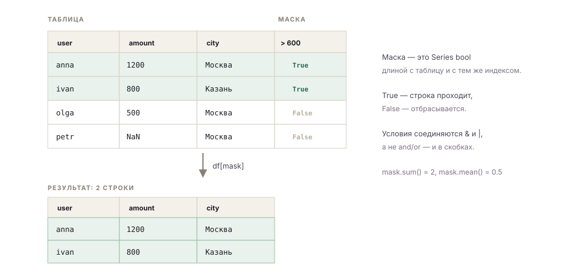

Фильтрация: булева маска как сито Строка проходит, если её условие истинно — и никак иначе
Фильтрация — это WHERE в мире pandas. Маска — такой же объект, как колонка:
Series из True и False длиной с таблицу. Понимание этого снимает вопросы «почему and
не работает» и «почему пропали строки».
01Зачем это backend-разработчику
- Отбор данных — самая частая операция: «заказы за неделю», «активные пользователи», «суммы выше порога».
- Проверки и валидация: найти аномалии, пустые значения, подозрительные диапазоны.
- Прямой перенос в SQL:
df[mask]— этоWHERE,isin—IN,isna—IS NULL. - Собеседование: «как отфильтровать по двум условиям», «чем
andотличается от&», «почему маска не работает».
02Ассоциация-якорь: сито
Маска — это сито с дырками. Таблица просыпается через него: строки, где условие истинно, проходят; остальные остаются сверху и отбрасываются.
Сито имеет ровно ту же форму, что таблица. Не «фильтр где-то внутри», а отдельный
объект длиной с таблицу. Поэтому его можно посчитать: mask.sum() — сколько строк прошло.
03Ассоциативный ряд: восемь звеньев
- df["amount"] > 600сравнение даёт Series bool
- df[mask]строки, где True
- & | ~поэлементная логика
- скобкиприоритет операций
- isinпроверка по списку — SQL IN
- betweenдиапазон включительно
- str.containsпоиск по тексту
- isna / notnaпропуски — отдельный случай
04Схема: маска и результат

05Как это устроено на самом деле
Сравнение колонки с числом применяется к каждому элементу и даёт Series из bool с тем же индексом.
Индексация df[mask] оставляет строки, где значение истинно. Результат — новая
таблица (в pandas 3 с Copy-on-Write), поэтому правка отфильтрованной копии не меняет исходную.
| pandas | SQL | Смысл |
|---|---|---|
| df[df["amount"] > 600] | WHERE amount > 600 | простое условие |
| df["city"].isin(["A", "B"]) | WHERE city IN ('A','B') | вхождение в список |
| df["amount"].between(600, 1200) | BETWEEN 600 AND 1200 | диапазон включительно |
| df["amount"].isna() | WHERE amount IS NULL | пропуск |
| df["user"].str.contains("an") | WHERE user LIKE '%an%' | поиск подстроки |
Почему and не работает
and требует одного значения истинности, а у нас Series из сотен значений.
Нужны поэлементные &, |, ~ —
те же операторы, что в NumPy (глава 08), потому что маска pandas устроена так же.
NaN ведёт себя отдельно
Любое сравнение с NaN даёт False, поэтому строка с
пропуском не попадёт ни в amount > 600, ни в amount <= 600.
Для пропусков есть isna()/notna().
06Лаборатория: запустить и увидеть
Фрагменты файла 14_filtering_lab.py.
В таблице специально есть пропуск в amount.
Шаг 1. Маска — Series bool
mask = df["amount"] > 600 print(mask) print(df[mask])
Шаг 2. Два условия
both = (df["amount"] > 600) & (df["city"] == "Москва") print(df[both])
Шаг 3. isin, between, contains
print(df[df["city"].isin(["Казань", "Тверь"])])
print(df[df["amount"].between(600, 1200)])
print(df[df["user"].str.contains("an", case=False)])
Шаг 4. Пропуски
print(df[df["amount"].isna()]) print(df[df["amount"].notna()])
Шаг 5. Маска как число
print(mask.sum(), mask.mean())
Шаг 6. loc с маской и query
print(df.loc[df["amount"] > 600, ["user", "amount"]])
print(df.query("amount > 600 and city == 'Москва'"))
query читается ближе к SQL, но строки внутри — не Python-код: переменные
передаются через @, а сложные выражения лучше писать маской.
07Мост: SQL WHERE и ловушки
Прямые соответствия
SELECT * FROM orders WHERE amount > 600;
SELECT * FROM orders WHERE city IN ('Москва', 'Казань');
SELECT * FROM orders WHERE amount BETWEEN 600 AND 1200;
SELECT * FROM orders WHERE amount IS NULL;
NOT IN и NULL
~df["city"].isin([...]) в pandas ведёт себя предсказуемо. А в SQL
NOT IN с NULL в подзапросе может вернуть пустой результат — об этом подробно
в главах 20 и 22. Здесь достаточно запомнить: пропуски — отдельная категория, а не «ещё одно значение».
Фильтр в pandas или в SQL?
Если данные уже в базе — фильтруйте в базе: меньше строк придёт в память. pandas-фильтрация нужна, когда данные уже загружены или их источник — CSV/API. Это правило вернётся в главе 25.
08Шесть ошибок, на которых спотыкаются
(df["a"] > 1) and (df["b"] < 2) → ValueError: The truth value of a Series is ambiguous.
&, |, ~.df["a"] > 1 & df["b"] < 2 — приоритет у &, условие считается не так.
df["amount"] == np.nan всегда False, даже для самой NaN-строки.
isna() / notna().На пропусках по умолчанию получается NaN в маске, и фильтрация может вести себя неожиданно.
str.contains("x", na=False); при необходимости regex=False.По умолчанию regex=True: точка означает «любой символ», а не точку.
str.contains(".", regex=False) для буквального поиска.Отфильтрованная таблица — новая. Правка «результата» не меняет исходную таблицу.
df.loc[mask, "col"] = value.09Вопросы с собеседования
Как устроена булева фильтрация?
Сравнение колонки даёт Series bool с тем же индексом; df[mask] оставляет строки, где True. Результат — новая таблица.
Почему and не работает, а & работает?
and сводит выражение к одному True/False, а у Series их много. & — поэлементная операция.
Как объединить три условия?
Через & и | со скобками: ((a > 1) & (b < 2)) | c.isna(). Для сложных случаев — query.
Чем df[mask] отличается от df.loc[mask, "col"]?
Первое возвращает все колонки, второе — только указанные. Оба фильтруют строки по маске.
Как отфильтровать по списку значений?
df[df["city"].isin(values)], отрицание — ~. Для больших списков передавайте set: проверка будет быстрее.
Почему строки с NaN исчезают при фильтрации?
Сравнение с NaN всегда False, поэтому строка не проходит ни прямое, ни обратное условие. Это не баг — это семантика пропуска.
Что быстрее: query или маска?
На обычных объёмах разница незначительна. query читается ближе к SQL, маска универсальнее и точнее контролируется.
Как посчитать долю прошедших строк?
mask.mean() — среднее по bool даёт долю True.
10Три задачи: сначала своя попытка
01 Заказы по условию
Оставьте заказы из Москвы дороже 600 и выберите только user и amount.
Показать решение
mask = (df["city"] == "Москва") & (df["amount"] > 600) print(df.loc[mask, ["user", "amount"]])
02 Пропуски
Найдите строки с пропущенной суммой и посчитайте их долю.
Показать решение
print(df[df["amount"].isna()]) print(df["amount"].isna().mean())
Что важно. isna() — маска, поэтому её можно усреднить.
03 Осторожно с contains
Найдите пользователей, в имени которых есть точка. Почему обычный str.contains(".") находит всех?
Показать решение
По умолчанию regex=True, и точка — любой символ. Нужно
regex=False или экранирование "\.".